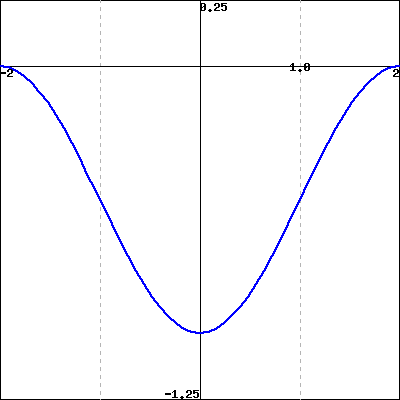

The figure below gives the behavior of the derivative of \(g(x)\) on \(-2\le x\le 2\text{.}\)

Graph of \(g'(x)\) (not \(g(x)\))
(Click on the graph to get a larger version.)
Sketch a graph of \(g(x)\) and use your sketch to answer the following questions.
A. Where does the graph of \(g(x)\) have inflection points?
\(x =\)
Enter your answer as a comma-separated list of values, or enter none if there are none.
B. Where are the global maxima and minima of \(g\) on \([-2,2]\text{?}\)
minimum at \(x =\)
maximum at \(x =\)
C. If \(g(-2) = -8\text{,}\) what are possible values for \(g(0)\text{?}\)
\(g(0)\) is in
(Enter your answer as an interval, or union of intervals, giving the possible values. Thus if you know \(-5 \lt g(0) \le -2\text{,}\) enter (-5,-2]. Enter infinity for \(\infty\text{,}\) the interval [1,1] to indicate a single point).
How is the value of \(g(2)\) related to the value of \(g(0)\text{?}\)
\(g(2)\) \(g(0)\)
(Enter the appropriate mathematical equality or inequality, \(=\text{,}\) \(\lt \text{,}\) \(>\text{,}\) etc.)